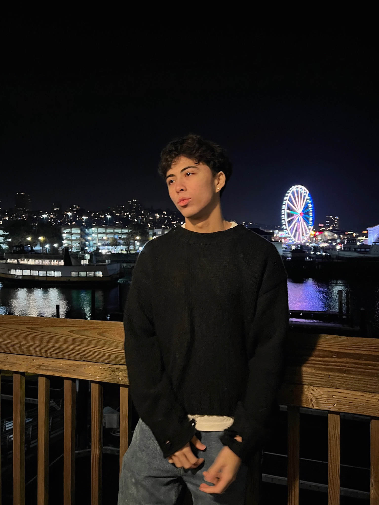
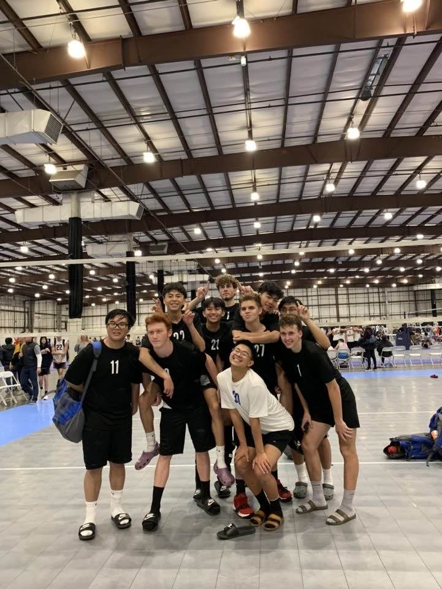
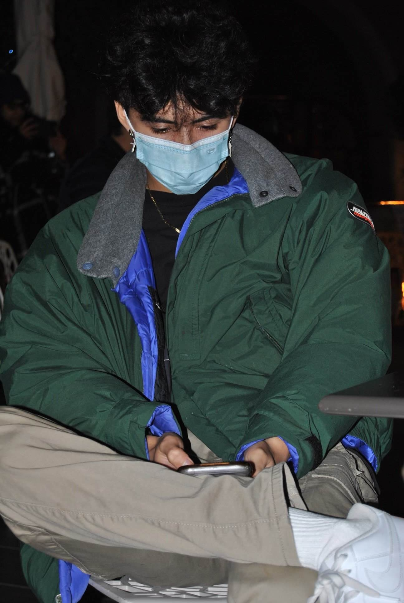
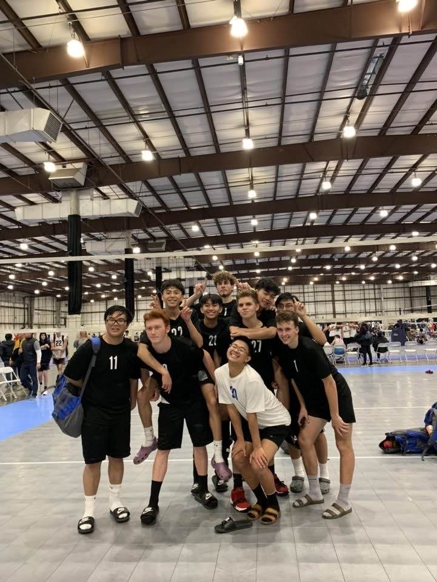
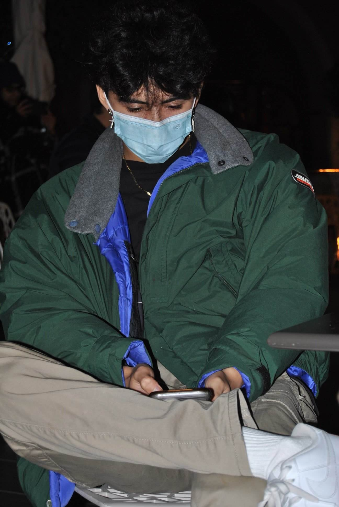
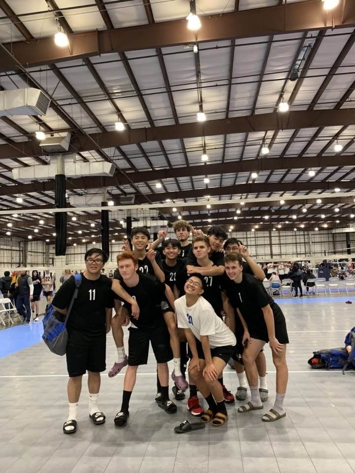
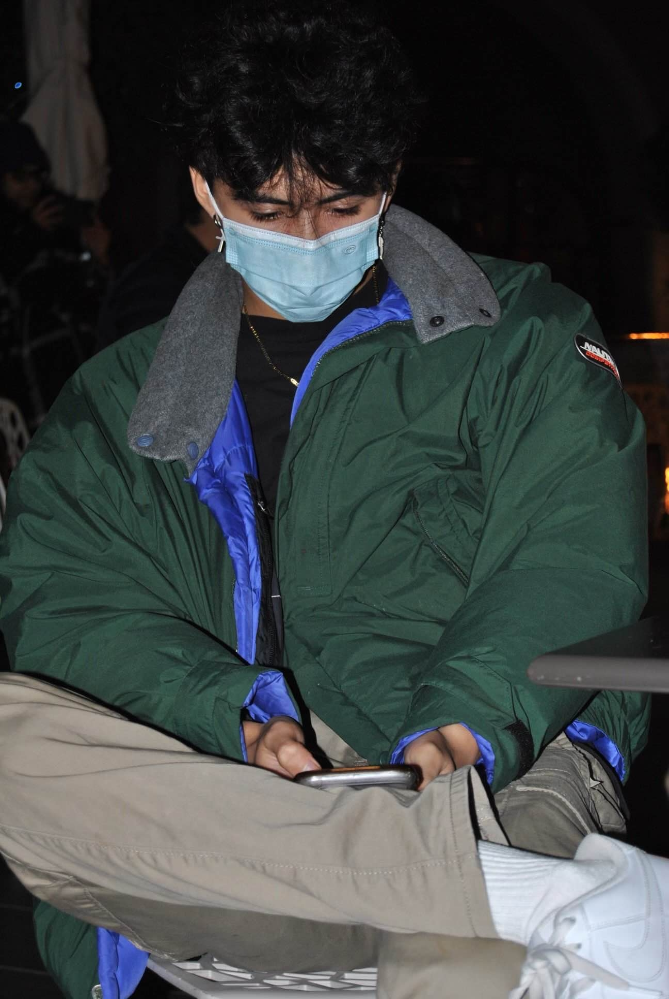
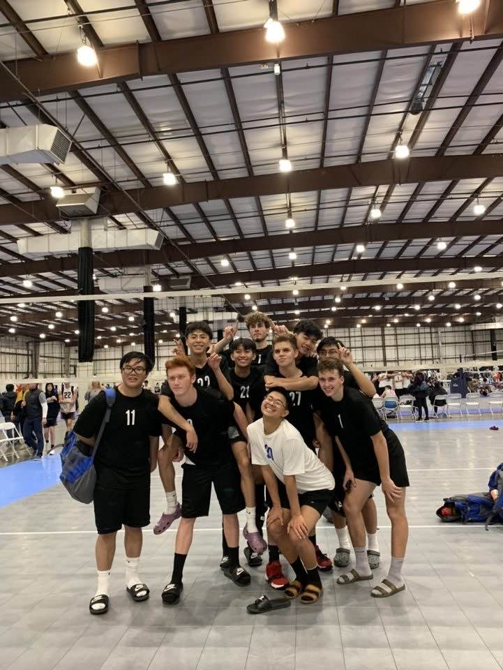
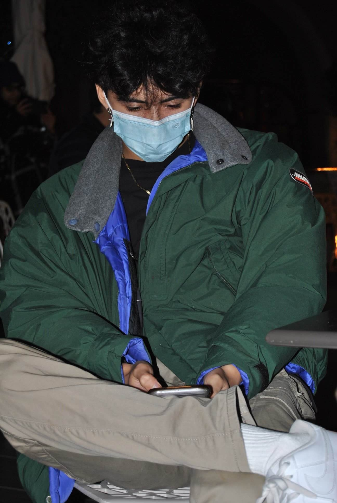

 







I’m a creative soul, blending my passion for art with a love for intellect, currently navigating my third year at San Francisco State University. As a California-based graphic designer, I’m driven by the desire to challenge myself and push the boundaries of creativity across a variety of design disciplines. Whether I’m crafting bold graphic art, experimenting with digital media, or finding the perfect balance between aesthetics and functionality, I’m always seeking new ways to innovate and make an impact. Beyond design, I believe in living a well-rounded life. Volleyball keeps me active, weightlifting builds both my body and mind, gaming hones my strategic thinking, and music provides the soundtrack to everything I do. I’ve always been drawn to adrenaline-pumping activities, and you’ll often find me cliff jumping, seeking that thrill and the rush of conquering personal challenges. Life, for me, is all about taking risks—both in art and in personal pursuits. I approach every project and every experience with that mindset, eager to grow and learn along the way. For me, design is not just about personal expression; it’s about having the ability to shape how others see and experience the world. I’ve always loved the reactions my designs evoke, whether it’s through a visual storytelling piece, a digital interface, or an interactive design. The joy of creating something that resonates with others is what keeps me going, and it’s a huge part of why I love creating for people. On campus, you might spot me in the gym, exploring new side quests in life, or collaborating with others to find innovative solutions. In the future, I hope to become a UX/UI designer or continue working as a graphic designer for a medical company, where I can create meaningful designs that have a real impact. Music is deeply ingrained in who I am, and this webpage will serve as a window into both my designs and my inspirations, including the top 5 picks that influence my creative journey. I hope you enjoy what I share!